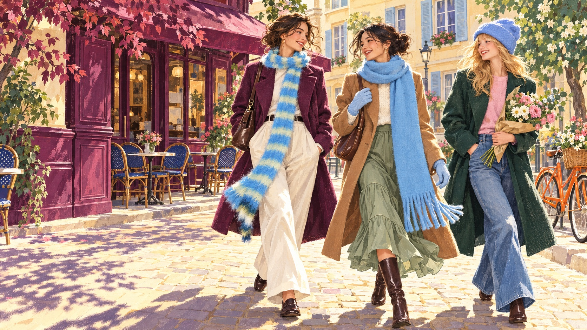

Mossyloom on the move
Take the
scenic route.
Good company. A little colour.
Somewhere lovely to be.
THE CITY STROLL · CHAPTER 01Keep wandering
For the way you wander
The little things.
The whole look.
One more layer.
A whole new feeling.


The everyday collection
Out & about.
A colour to carry with you
A little blue
goes a
long way.
From the first coffee
to the long way home.